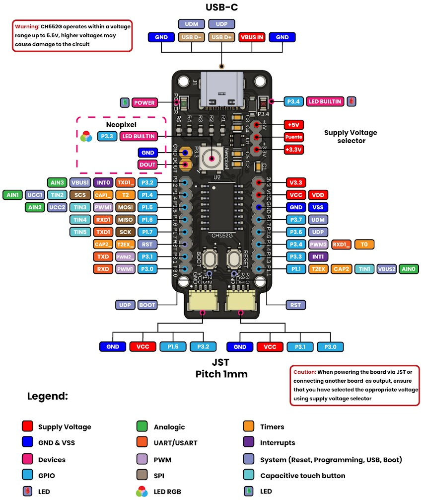

Cocket Nova CH552#
Truco
Esta guía está diseñada para personas con un conocimiento básico de programación y electrónica. Es ideal para aquellos interesados en adentrarse en sistemas embebidos y programación de microcontroladores.
Esta es una excelente guía para programadores principiantes, centrada en el uso del compilador SDCC en entornos Windows y Linux. Aquí, puedes encontrar excelentes referencias y ejemplos junto con documentación completa enfocada en desarrollar tecnología para sistemas embebidos. Este curso cubre todo, desde la instalación y configuración del compilador hasta la gestión de dependencias del proyecto y el desarrollo de código. Es un recurso valioso que te guiará a través del proceso de desarrollo utilizando tecnología de alta calidad, asegurando proyectos duraderos y robustos.
¿Por qué usar el compilador SDCC?#
El Small Device C Compiler (SDCC) es una herramienta muy reconocida en el campo del desarrollo de sistemas embebidos. Aquí hay varias razones por las que podrías elegir usar el compilador SDCC para tus proyectos:
Gratis y de Código Abierto: SDCC está disponible de forma gratuita y es de código abierto, lo que significa que puedes usarlo sin costos de licencia y contribuir a su desarrollo si lo deseas.
Amplio Soporte para Microcontroladores: Soporta una amplia gama de microcontroladores, incluidos los populares como el CH552, lo que lo convierte en una opción versátil para diversos proyectos.
Facilidad de Uso: SDCC es conocido por su interfaz amigable y configuración sencilla, lo que ayuda a los desarrolladores a comenzar rápidamente.
Comunidad Activa y Documentación: Con una comunidad activa y documentación extensa, puedes encontrar soporte y recursos para ayudarte a resolver cualquier problema que encuentres.
Compatibilidad: SDCC es compatible con muchas otras herramientas y entornos, permitiendo una integración fluida en flujos de trabajo existentes.
Entendiendo los Lenguajes de Programación en Sistemas Embebidos#
Para desarrollar sistemas embebidos efectivos, es crucial entender los diferentes tipos de lenguajes de programación utilizados:
Lenguaje Máquina#
El lenguaje máquina, también conocido como código máquina, es el nivel más fundamental de programación. Las instrucciones se escriben en patrones binarios, que son combinaciones de 1s y 0s. Estos patrones corresponden a niveles de voltaje ALTO y BAJO que el microcontrolador o microprocesador puede interpretar directamente. Este lenguaje es el más difícil de usar para los humanos debido a su complejidad y falta de legibilidad.
Lenguaje Ensamblador#
El lenguaje ensamblador es un paso por encima del lenguaje máquina, proporcionando un formato más legible para los humanos. Utiliza mnemónicos y códigos hexadecimales para representar instrucciones del lenguaje máquina. Por ejemplo, el lenguaje ensamblador del microcontrolador 8051 incluye una combinación de palabras similares al inglés llamadas mnemónicos y números hexadecimales. A pesar de ser más legible que el lenguaje máquina, aún requiere un conocimiento profundo de la arquitectura del microcontrolador.
Lenguaje de Alto Nivel#
Los lenguajes de alto nivel simplifican la programación al abstraer los detalles intrincados de la arquitectura del microcontrolador. Estos lenguajes utilizan palabras y declaraciones familiares, lo que los hace más fáciles de aprender y usar. Ejemplos de lenguajes de alto nivel incluyen BASIC, C, Pascal, C++ y Java. Los programas escritos en lenguajes de alto nivel se traducen a código máquina mediante un compilador, cerrando la brecha entre el código amigable para los humanos y las instrucciones comprensibles para la máquina.
Al comprender estos diferentes niveles de lenguajes de programación, puedes elegir el más adecuado para tu proyecto, equilibrando la facilidad de uso con el nivel de control que necesitas sobre el hardware.
Requisitos#
Python (Instalación de Paquetes y Entornos) ]
Instalación de Controladores para el Compilador SDCC
Docker (Instalación de Paquetes y Entornos)
Utilización de Controladores del Sistema Operativo
Comprensión de Electrónica Básica
PinOut#
La placa de desarrollo del microcontrolador CH552 tiene un total de 16 pines, cada uno con una función específica. A continuación, el diagrama de pines y su respectiva función:
{kind=link}

Figura 2 Cocket Nova CH552 PinOut#